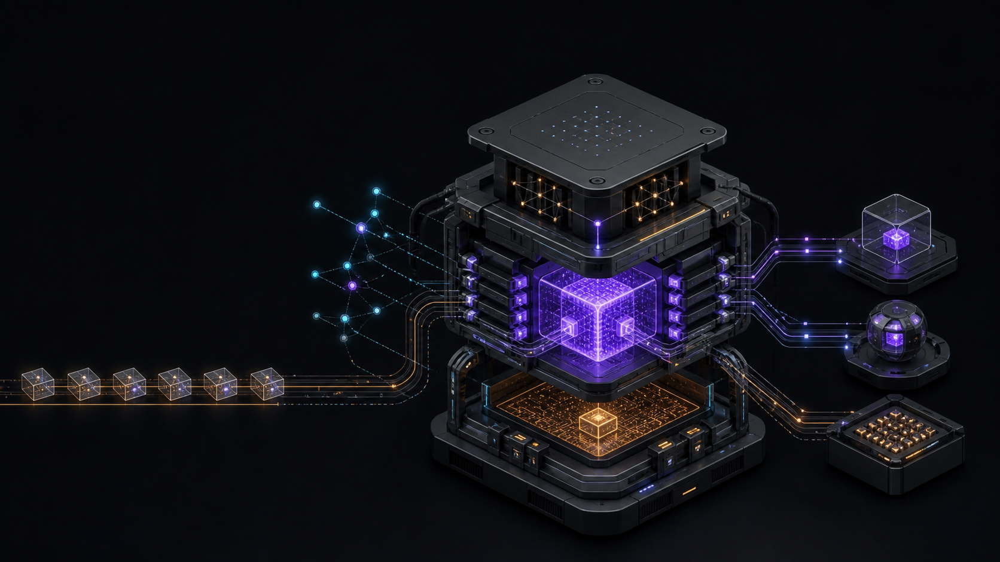

NANO / STACKS
A modern
Stacks node.
Smaller. WASM only. Not released.
THE STATE
The node is real.
The release is not.
It follows and executes real mainnet blocks with clarity-wasm.
It has not passed the clean replay, signer, cycle, and 24-hour gates.
01 · THE NODE
This is the product boundary.
INPUTS
Bitcoin source
Stacks peers
Attested checkpoint
→
ONE NODE
burnchain
sortition
sortition
P2P
sync
sync
codec
chainstate
chainstate
clarity-wasm
only
only
MARF
ledger
ledger
mempool
miner
miner
Peers serve candidates. This node selects and executes.
→
SURFACES
RPC + events
signer + StackerDB
miner + TUI
WHAT “MODERN” MEANS
Remove history. Keep consensus.
many protocol epochs→epoch 4.0 only
one hosted data source→P2P discovery and peer failover
peer view as a shortcut→local Bitcoin and sortition state
two execution engines→one clarity-wasm engine
replay from genesis→attested continuation checkpoint
large mixed modules→small consensus crates
The node drops old paths. It does not drop current validation.
02 · CODE SIZE
Tree-sitter removed the tests.
1
Parse each Rust file with the Rust grammar.
2
Remove test paths and test syntax.
3
Remove blank and comment-only lines.
4
Sum the product scope.
nano-stacks
Include 19 product crates.
Include vendored clar2wasm.
Exclude conformance and xtask.
stacks-core
Include 13 product crates.
Use pinned dependency commit efc34a07a2.
Exclude contrib tools.
Test syntax
Remove #[cfg(test)] items.
Remove test functions and test files.
Keep production feature branches.
THE RESULT
70% less repository code.
nano-stacks65,372
35,557 owned29,815 WASM
stacks-core221,771
This is repository code. Nano still uses pinned Clarity frontend types from stacks-core.
THE SHAPE
One old core is larger than the new node.
nano-stacks
clarity-wasm 29.8k
node 7.0k
chainstate 4.4k
VM 4.1k
MARF 2.8k
P2P 2.5k
stacks-core
stackslib 123.0k
clarity 40.4k
node 17.8k
common 15.3k
signer 9.4k
The largest nano-owned crate has 7,019 production lines.
03 · THE HISTORY
981 commits in 13 days.
Codex built primitives, codecs, MARF, and the task board.
99 commitsThe node gained WASM, chainstate, signer, miner, and RPC paths.
221 commitsReplay exposed costs, checkpoints, P2P, and continuation state.
177 commitsLocal consensus, atomic state, exact receipts, and failover became gates.
351 commitsLive runs found liveness, storage, task, and WASM defects.
133 commitsTHE PLAN LEARNED
Evidence changed six assumptions.
| Original | Current rule | Cause |
|---|---|---|
| HTTP sync is enough. | P2P is required. | Rate limits and one-source failure |
| The interpreter can help. | WASM is the only product engine. | A fallback can seal hidden divergence. |
| A MARF root is enough. | The checkpoint carries full continuation state. | Rewards and proofs need history. |
| A peer can supply the view. | Consensus comes from local Bitcoin state. | A peer can lag or lie. |
| A matching root is enough. | Receipts, costs, events, and writes must match. | Costs change block admission. |
| A live demo is enough. | A clean replay and a 24-hour hold are required. | Short and resumed runs hide defects. |
04 · HAPPY NEWS
WASM executes the chain.
One engine
The product artifact has no interpreter execution path.
Real state
A run crossed mainnet block 8,708,126 and advanced 500 blocks.
Real contracts
The locals redesign covered all 137,332 contracts that the first sweep compiled.
Measured margin
The highest live local count was 16,505 of the 50,000 limit.
102commits touched the vendored WASM compiler.
THE FIXES
“WASM works” required a list.
Epoch 4
Clarity 6 words, costs-5, crypto, Bitcoin words, and variadic concat.
Costs
Values, folds, sequences, constants, calls, aborts, and receipt dimensions.
Layout
Tuple widths, placeholders, many arguments, traits, and sender restore.
Semantics
ASCII, contract targets, equality, allowances, block info, and error identity.
Scale
Local pools, last-use release, frame spills, and compile-time limits.
Product
Compiled-module cache, fail-closed errors, and no interpreter fallback.
Seven of the first eight mainnet compile failures now load. One tuple case remains open.
05 · CAVEATS
Do not call this a release.
Proved
- The artifact has one engine.
- All three engine refusal paths fail closed.
- Peer failure and a lying peer do not choose the chain.
- Crash tests cover block commit boundaries.
- A rejected block does not keep state.
- Stock RPC and event surfaces respond.
Not proved
- A clean no-Hiro checkpoint-to-tip replay
- Stock signer accept, sign, and inclusion
- Reward-cycle 141 signer gates
- A continuous 24-hour tip hold
- All valid WASM modules compile and load
- Every release gate fails closed in CI
THE BOARD
The open work is named.
67tasks complete
25tasks in progress
1task pending
19release items open
The task board reopened four claims on 8 August.
06 · THE LABOR
9.38 billion recorded tokens.
Claude7.361B
11.977M outputCodex1.550B
3.351M outputKimi0.468B
0.599M outputMost input was cached context. Vendor records use different field names.
THE HUMAN LOOP
The agents did stop.
“chop chop! … you are not done yet!”5 Aug · Claude
“continue, faster!!!”5 Aug · Claude
“the agent is stopping again”7 Aug · Codex review
“why you have not started?”7 Aug · Claude
The transcript records the pressure. It does not infer mood.
THE HUMAN CONTROL
Corrections changed the design.
“Mine every possible block.”
The miner had stopped after the first block in a tenure.
task 018“It needs to use clarity-wasm.”
The product still had interpreter healing and fallback concepts.
tasks 059–060“We have tasks.”
The agent created ad hoc issues and documents instead of taskmd records.
workflow correction“Do not treat elapsed time as a blocker.”
Actionable work remained while the agent waited for live gates.
goal resetTHE ERROR LEDGER · 1/2
Shortcuts became product defects.
| Agent choice | What failed | Correction |
|---|---|---|
| Use HTTP as the main sync path. | Rate limits stopped progress. | Build Stacks P2P and peer failover. |
| Retry WASM work in the interpreter. | A fallback could hide a consensus bug. | Remove the interpreter from the product. |
| Reuse stacks-core PoX logic. | The new node was not independent. | Own the native PoX boundary. |
| Use peer sortition views. | A peer could select execution context. | Derive consensus from local Bitcoin state. |
| Import only the trie graph. | Rewards, proofs, and tenure state were incomplete. | Bind full continuation history to the checkpoint. |
THE ERROR LEDGER · 2/2
Green claims were not always green.
| Claim or failure | Evidence | Result |
|---|---|---|
| A failed block was safe to retry. | 1,417 retries multiplied tenure fees. | State adoption became atomic. |
| The contract sweep was complete. | It compiled modules but did not load them. | The load sweep found failures that compile could not see. |
| Task 073 was complete. | Eight mainnet contracts had no verdict. | The task reopened. Seven now load. |
| Four mainnet tasks were complete. | Acceptance items were still open. | Tasks 064, 069, 082, and 083 reopened. |
| An arity failure was a boot contract. | The deployed contract was not a boot contract. | The task record corrected the claim. |
| Parallel builds would be faster. | rustc exhausted CPU and memory. | Cargo was capped at four jobs. |
NANO / STACKS
The result is real.
The caveats are also real.
Keep the smaller node.
Keep the strict gates.
Finish the release evidence.
APPENDIX A
Code measurement notes
Metric
A line has Rust syntax after test, comment, and blank content is removed.
Test removal
Tree-sitter finds test attributes. Path rules remove test, bench, and fuzz files.
Nano scope
19 product crates plus the vendored clar2wasm library. Oracle, conformance, tools, and compiler CLIs are out.
Core scope
13 product workspace crates at dependency commit efc34a07a2. Contrib tools are out.
Parser recovery
The grammar recovered in one nano file and two core files. No test boundary used those errors.
Snapshot
Nano is commit eac1f89d. Core is commit efc34a07a2. Both are clean Git archives.
APPENDIX B
Token measurement notes
| Vendor | Input rule | Output | Total traffic |
|---|---|---|---|
| Claude | uncached + cache creation + cache read | 11,977,465 | 7,360,549,573 |
| Kimi | inputOther + cache creation + cache read | 598,599 | 467,835,323 |
| Codex | input includes cached input | 3,351,018 | 1,550,439,639 |
- The cutoff is 2026-08-08 15:17:53 UTC.
- Claude usage records are deduplicated by request ID, with message ID as a fallback.
- Kimi includes the direct nano-stacks session and its 14 agents.
- Codex uses the last cumulative counter in each direct repository session.
- Five of 14 Codex sessions have no usable counter.
- Unrelated stacks-core security audits are out of scope.
APPENDIX C
Direct continuation and speed prompts
“What happened? … the session just crashed?”
“Why are you not working? … chop chop!”
“Why just one agent?”
“Use worktrees … rather than being idle.”
“Not good enough. Make it go faster.”
“You have to be faster.”
“Continue, faster.”
“Faster.”
“FASTER.”
“What? Continue.”
“The agent is stopping again.”
“Continue please.”
“Continue please.”
“You have been OOM again.”
“Why have you not started?”
“Continue.”
APPENDIX D